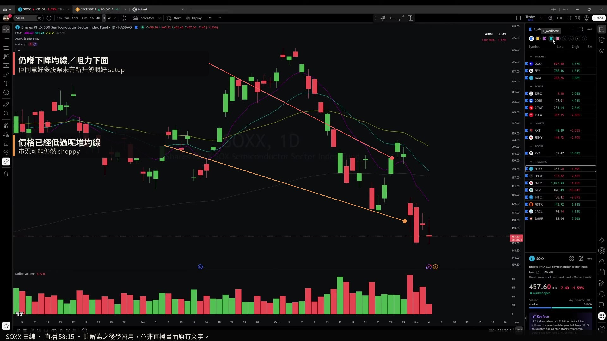
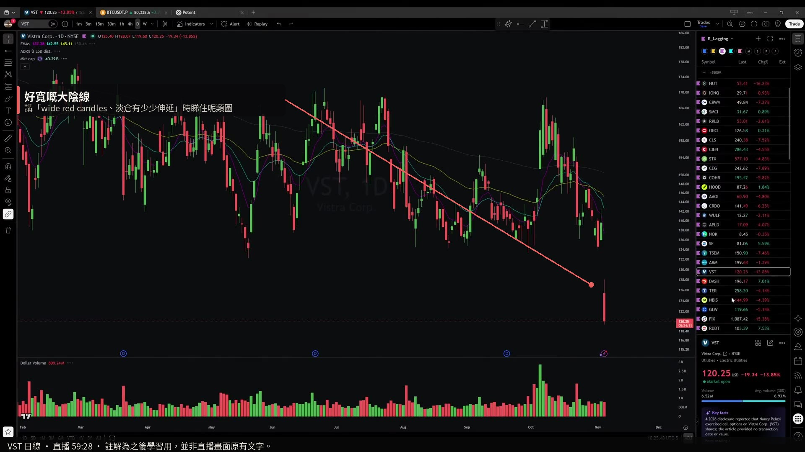
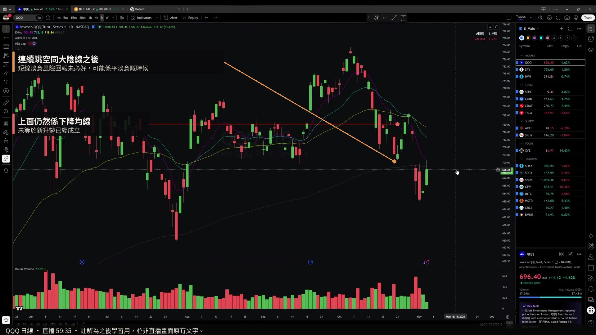

概要
同意市況可能仍然 choppy，短線淡倉未必再划算
觀眾問：係咪同意好多股票仍然未有新升勢嘅好 setup，市況可能仲喺一個 choppy range？佢話同意，好多股票仍然喺所有阻力、所有下降均線下面。但短線有啲已經有少少伸延：連續跳空同好寬嘅大陰線向下，所以短線淡倉嘅風險回報未必好，可能係 cover shorts 嘅時候。收結前（1:02:23 起）再講應該放慢、等市況沉澱、整底、等波動下降，並觀察反彈同 fade 時個別股票嘅表現；覺得而家未必係最好嘅交易環境，可能正進入一個偏亂嘅市場，除非見到急轉彎。
圖一
SOXX 日線：仍然喺下降均線／阻力下面
直播 58:15

原話
Do you agree that many stocks still not has a great setup for a new uptrend, so the market may still in a choppy range? Yes, like yes, and a lot of the stock is still under all the resistance, under all the declining EMAs.
你同唔同意好多股票仍然未有一個新升勢嘅好 setup，所以市況可能仲喺一個 choppy 嘅區間？係，同意。好多股票仍然喺所有阻力下面，喺所有下降緊嘅 EMA 下面。
點樣讀
半導體呢度用嚟示範「仍在下降均線下面」：價格喺右邊一堆向下嘅均線之下。呢句係市況判斷，唔等於叫人而家先至新開淡倉。
圖二
VST 日線：好寬嘅大陰線，短線已經伸延
直播 59:28

原話
But in the short run some stocks are getting a little bit extended, like we got some consecutive gap downs and wide red candles to the downside.
但短線有啲股票已經有少少伸延，例如我哋見到一啲連續跳空，同埋向下好寬嘅大陰線。
點樣讀
VST 右邊幾乎獨立嘅大陰線（當日約 −13.85%）就係呢類「wide red candles」嘅清楚例子。佢冇單獨把 VST 講成一筆交易，本頁只用嚟對照口中嘅形態。
圖三 · 主圖
QQQ 日線：連續跳空同大陰線之後，可能係平淡倉嘅時候
直播 59:35

原話
So in the short run I think the risk reward of shorting may not be that good, and probably it's a good time to cover the shorts.
所以短線嚟講，我覺得淡倉嘅風險回報未必咁好，而且可能係平掉淡倉嘅時候。
收結（1:02:23–1:03:58）畫面多數仍然係 QQQ 日線（1:03:20 附近掃過 MDB，本頁唔另出圖）。原話按 YouTube「during the fade」（Whisper v2 聽到 bait），以及語境把 building some basis 讀成 bases：I think it's time to slow down a little bit and letting things to settle down, or like building some bases, letting the volatility to come down, and also observing the individual stocks actions during the bounce or during the fade. I think not really the best trading environment right now. I think maybe we're entering a choppy market, and unless we are seeing some sharp turns.
譯：我覺得係時候放慢少少，等事情沉澱，或者整一啲底，等波動下降，亦觀察個別股票喺反彈或者 fade 期間點走。我覺得而家未必係最好嘅交易環境。我估我哋可能正進入一個偏亂嘅市場，除非見到一啲急轉彎。
可選原畫面備份：images/choppy-cover/src_qqq_daily_10255.jpg（1:02:55，同 59:35 好接近，所以唔再註解多一張）。
點樣讀
59:28 係 VST，59:30 係 GLW，到 59:35 先穩定喺 QQQ 日線。本頁用 59:35 做大市圖。QQQ 近期有連續跳空同大陰線，然後出現反彈，上面仍然係下降緊嘅均線——正好同時說明「短線淡倉已經伸延」同「未等於新升勢已經成立」。
呢句係管理已有淡倉嘅判斷，唔係叫人新開淡倉，亦冇講要全部平定、平喺邊個價。
附註
注意事項
- 圖上中文註解係之後加上嘅學習說明，唔係直播畫面原本已有嘅字。可用「原畫面」對返未加字嘅截圖。
- 畫面睇唔到成交價、倉位大細或者損益，所以本頁唔寫死呢啲數字。
- 圖例多數只有顏色同數值，冇印均線周期。本頁唔會把某條彩線寫死成某個周期；如果佢有講周期，只標「佢口中嘅位置就喺呢附近」。
- 原話來自機器轉寫（faster-whisper large-v3-turbo，並對照 YouTube 自動英文字幕），並非逐字人工校對。標點為閱讀而加。
- 1:00:17–1:02:19 係職業／謙虛問答，唔係讀圖，所以唔獨立成科。
- 59:30 嘅 GLW、1:03:20 嘅 MDB 只係快速翻圖，冇獨立分析點，故唔出圖。
- 本頁只拆市況同淡倉管理呢段（約 57:59–1:00:15，並附 1:02:23–1:03:58 收結），冇混入其他系統或者規則。
免責聲明：呢份係教育拆解，方便之後 review 讀圖方法，唔係投資建議，亦唔好當作買賣指示。